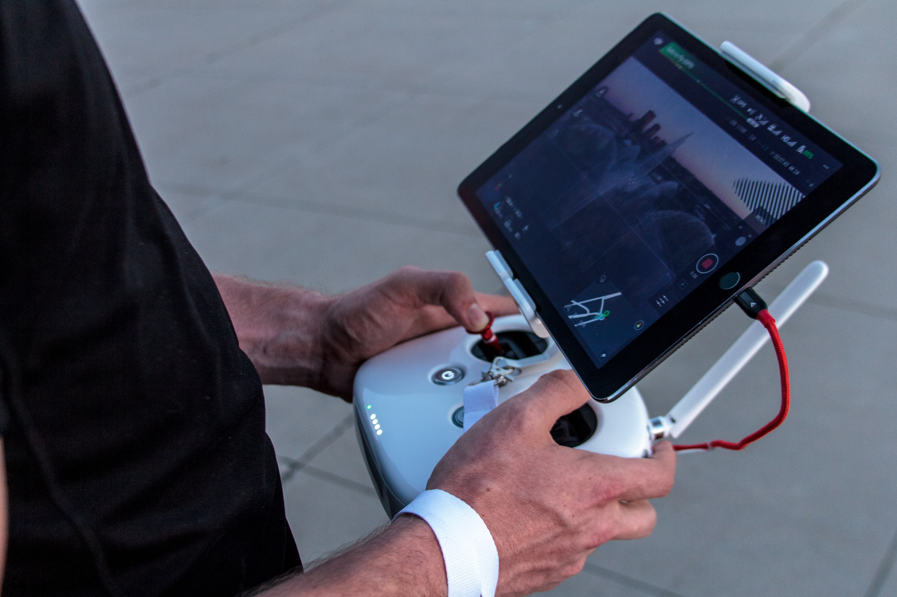

X
XBlog Post One
At the heart of our drone technology lies the cutting-edge Advanced Remote Control, a game-changer in the world of aerial exploration. Seamlessly connecting with your tablet, this controller opens up a world of possibilities for both novice and experienced drone enthusiasts. Its intuitive design empowers users to effortlessly navigate through the skies, capturing breathtaking imagery and video footage with precision. Crafted for optimal control and responsiveness, our Advanced Remote Control ensures a seamless connection between pilot and drone, allowing you to experience the thrill of flight like never before.
Our Advanced Remote Control not only offers a tactile and user-friendly interface but also boasts an array of innovative features. From real-time telemetry data to live streaming of your drone's point of view directly onto your tablet's screen, it transforms your device into a cockpit, granting you unparalleled situational awareness. Whether you're a professional photographer seeking to capture the perfect shot or an adventure enthusiast exploring uncharted landscapes, our Advanced Remote Control enhances your drone experience, making every flight a journey of precision and creativity. Elevate your aerial photography and videography game with the power of seamless tablet integration, all thanks to our state-of-the-art controller.